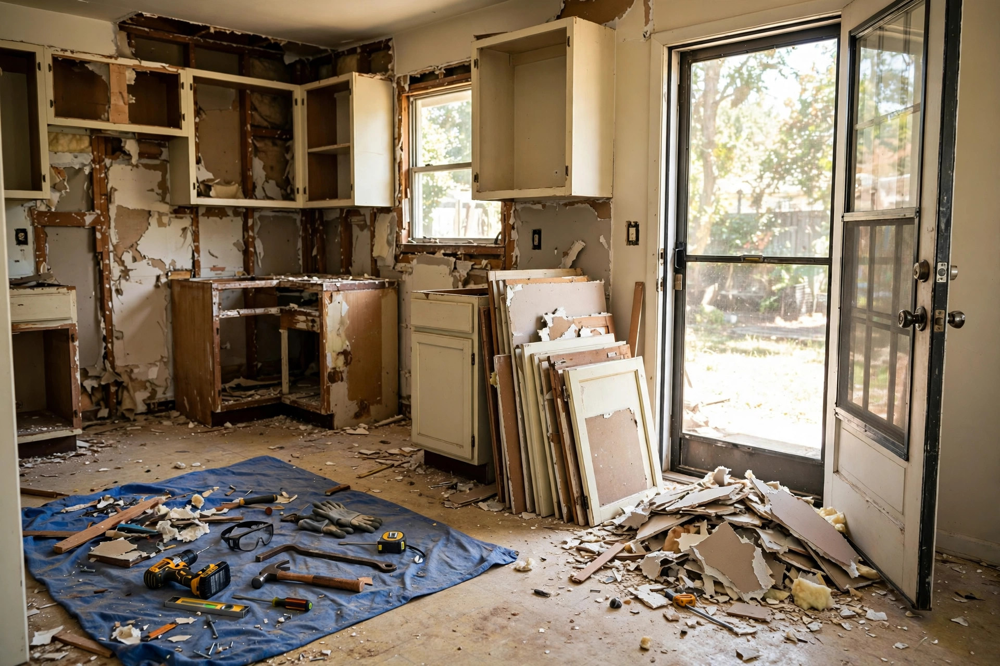

Playbook 01
The kitchen remodel
Cabinets, countertops, drywall, flooring, old appliances — a full kitchen gut is bulky but mostly light, which makes it the perfect 20-yard job. Stack flat materials (doors, drywall sheets) along the walls first, then fill the middle with the irregular stuff. Break down cabinets rather than tossing them whole; you'll fit 30% more.
Recommended size20-yard
Typical timeline7 days (demo + install overlap)
Watch out forTile and stone countertops — dense enough to matter. Keep them to one end and stay under the fill line.